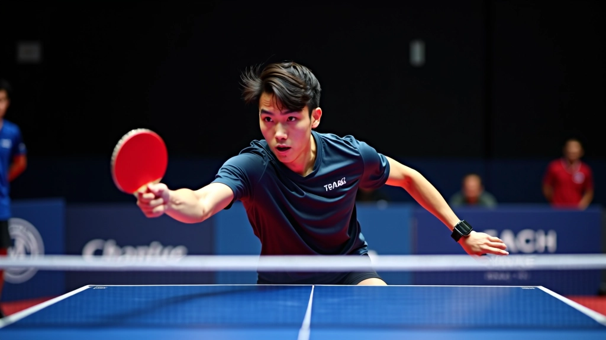
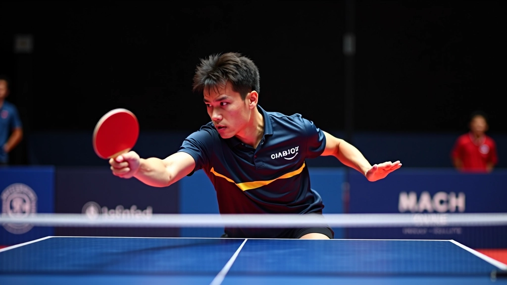
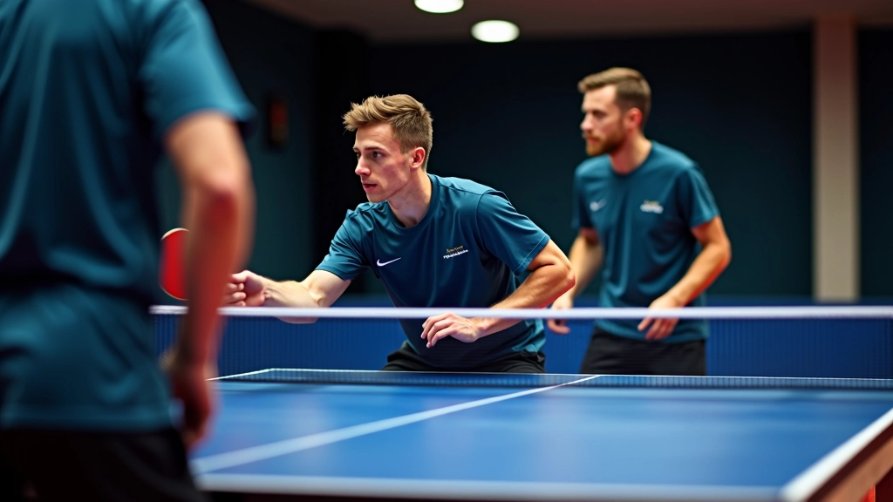
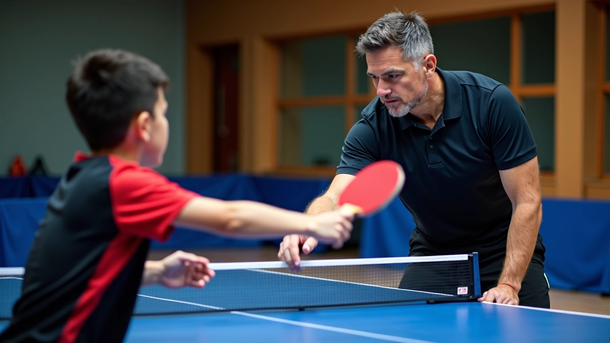
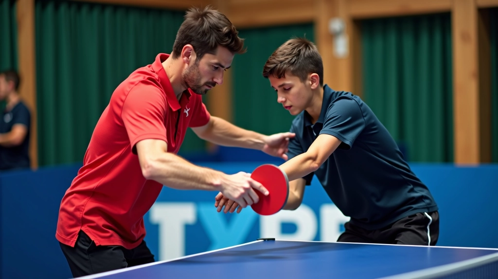
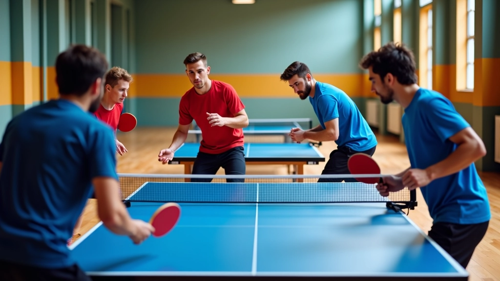

أساسيات القطع الدفاعي للمبتدئين
شرح مفصل لمبادئ القطع الدفاعي، موضع القدمين، حركة الذراع، والتوقيت الصحيح لبدء رحلتك.
اقرأ المزيدتقنيات متقدمة للاعبين المتمرسين، تشمل الدمج مع حركات أخرى والرد على الهجمات القوية بفعالية. اكتشف كيفية إتقان القطع الدفاعي على مستويات أعلى وتطوير استراتيجيات فعالة ضد خصوم محترفين.


فريق التحرير والمحتوى
من إعداد فريق نادي الشمس للمحتوى التحريري، متخصص في تقديم تقنيات تنس الطاولة الدفاعية بشكل عملي وسهل الفهم.
بعد إتقان الحركات الأساسية، يأتي الوقت الحقيقي للتقدم. لاعبو القطع المتقدمون لا يعتمدون على نفس الحركة مرات ومرات. بدلاً من ذلك، يدمجون تنويعات وحركات انتقالية سريعة تجعل من الصعب على الخصم توقع النتيجة. هنا، نتحدث عن استراتيجيات تحويلية تفصل بين لاعب جيد ولاعب ممتاز.
القطع الدفاعي المتقدم ليس مجرد دفاع سلبي. إنه هجوم ذكي يضع الخصم تحت ضغط مستمر. عندما تجمع بين قطع قوي مع دوران عميق، ثم تتحول فجأة إلى لعبة هجومية، فإنك تخلق التشويش الذي يحتاج اللاعب المحترف إليه.
الحركة بين الضربات هي المفتاح. لا تبقى في مكان واحد. عندما تؤدي قطعة دفاعية قوية، انقل وزنك للأمام بسرعة. هذا يعني أنك جاهز لضربة هجومية في اللحظة التالية إذا أرسل لك الخصم كرة ضعيفة.
في المستوى المتقدم، يجب أن تفكر في حركتك قبل أن تصل الكرة. توقع مسار الكرة، ضع نفسك في الموضع الأمثل، ثم أنفذ ضربتك. هذا يتطلب ممارسة مكثفة. في نادي الشمس، نركز على تمارين تطور هذا التوقع. نعمل على سرعة الحركة الجانبية والتقدم نحو الشبكة في نفس الوقت.

ملاحظة تحريرية: هذا المحتوى يقدم معلومات تعليمية حول تقنيات تنس الطاولة. النصائح والاستراتيجيات المذكورة هنا مبنية على خبرات عملية وأفضل الممارسات في المجال. يُنصح بالعمل مع مدرب مؤهل لتطبيق هذه التقنيات بشكل آمن وفعال، خاصة عند الانتقال إلى مستويات متقدمة. الظروف الفردية تختلف، وقد تحتاج التعديلات حسب مستوى لياقتك البدنية وخبرتك.

واحدة من أقوى الأدوات في ترسانة لاعب القطع المتقدم هي القدرة على تغيير مقدار الدوران بشكل جذري. ضربة واحدة قد تكون عميقة الدوران مع نزول طفيف في رأس المضرب. الضربة التالية قد تكون خفيفة الدوران مع رفع طفيف. هذا التنويع يجعل من المستحيل على الخصم الاستعداد بشكل صحيح.
الضغط النفسي ينشأ من الارتياب. إذا لم يعرف الخصم ماذا يتوقع، فسيرتكب أخطاء. قد يحاول بقوة كبيرة جداً ضد قطع خفيفة، أو يتردد ضد قطع قوية. في التدريب، نقضي ساعات على تطوير هذا الشعور بالتحكم. ليس عن السرعة فقط، بل عن الدقة والحسابات.
المستوى المتقدم من لعبة القطع يتطلب قراءة فورية لنوايا الخصم. قبل أن تصل الكرة إليك بقليل، يجب أن تعرف ما يحاول الخصم فعله. هل يحاول القوة؟ هل يحاول اللف حول جانبك؟ هل يقترب من الشبكة؟
هذه المهارة تُبنى من خلال التعرض المتكرر لأنماط مختلفة. في نادي الشمس، نقوم بتدريبات خاصة حيث يؤدي لاعب متقدم سلسلة من الضربات المختلفة، والمدافع يجب أن يتنبأ ويستجيب. بعد مئات هذه التكرارات، يصبح رد الفعل طبيعياً وسريعاً جداً.
عندما يأتي الخصم بهجوم قوي، لديك عدة خيارات. اختيار الخيار الصحيح في اللحظة الصحيحة هو ما يفصل الفائزين عن الخاسرين.
بدلاً من محاولة إيقاف الهجوم، قابله بقطع عميق جداً مع دوران قوي جداً. هذا يجبر الخصم على إعادة الضربة بقوة أكبر، مما قد يؤدي إلى خطأ. تذكر: موضع القدمين أولاً، ثم حركة الذراع.
إذا كانت الكرة القادمة قصيرة أو متوسطة الارتفاع، تجاهل القطع تماماً. تقدم بسرعة واضرب بقوة من فوق الشبكة. هذا يفاجئ الخصم ويسلب منه المبادرة في اللحظة.
تحرك جانباً بسرعة، ثم غيّر اتجاهك فجأة. قد تقوم بقطعة عميقة إلى زاوية بعيدة، ثم تتحرك للناحية الأخرى وتقوم بقطعة قصيرة. هذا التنويع يبقي الخصم في حالة ارتباك مستمرة.
لا تبقَ على خط النهاية. بعد كل قطعة، خذ خطوة أو خطتين للأمام. هذا يقلل من الوقت الذي يحتاجه الخصم للهجوم مرة أخرى، ويعطيك وقتاً أقل للتفكير وأكثر للتحرك.
لتطوير هذه المهارات، تحتاج إلى برنامج منظم. في نادي الشمس، نقدم جلسات تدريبية مخصصة للاعبين المتقدمين. الجلسة النموذجية تستمر 90 دقيقة وتتضمن:
15 دقيقة: حركات خفيفة وتمارين مرونة
30 دقيقة: تركيز على زوايا القطع والدوران المتغير
30 دقيقة: لعب ضد خصوم بمستويات مختلفة
15 دقيقة: مراجعة الأخطاء والتحسينات المستقبلية
الاستمرارية أهم من الشدة. بدلاً من جلسة واحدة مكثفة أسبوعياً، من الأفضل ثلاث جلسات معتدلة. هذا يسمح لجسمك بالتعافي والتعلم من كل جلسة.

استراتيجيات القطع الدفاعي المتقدمة ليست شيئاً تتعلمه في يوم واحد أو حتى شهر واحد. إنها تطور مستمر يتطلب التفاني والممارسة المنتظمة. لكن عندما تتقن هذه التقنيات، ستشعر بتحول حقيقي في لعبتك. ستصبح لاعب دفاع حقيقي لا يخشى أي هجوم.
ابدأ بتطبيق استراتيجية واحدة في كل مرة. اختبرها في المباريات التدريبية. احصل على ملاحظات من مدربك. ثم انتقل إلى الاستراتيجية التالية. هذا النهج المنظم يضمن أنك لن تشعر بالإرهاق ولن تفقد التركيز على الأساسيات.
في نادي الشمس، نحن هنا لدعمك في كل خطوة. سواء كنت تحتاج إلى جلسة فردية مكثفة أو مجموعة تدريب منتظمة، لدينا البرنامج المناسب لك. تواصل معنا لمعرفة المزيد عن برامجنا المتقدمة.
اكتشف المزيد عن تقنيات تنس الطاولة الدفاعية
شرح مفصل لمبادئ القطع الدفاعي، موضع القدمين، حركة الذراع، والتوقيت الصحيح لبدء رحلتك.
اقرأ المزيد
كيفية ضبط زاوية المضرب بشكل صحيح لإنتاج دوران قوي في القطع الدفاعي، مع تقنيات متقدمة.
اقرأ المزيد
برنامج تدريبي مجرب يتضمن تمارين عملية وحركات متكررة لتطوير مهارات القطع الدفاعي الفعلية.
اقرأ المزيد